FAIL
2026-10-07 09:31:59 · позиций 70 · FAIL 42 · аномалий вне деталей 0 · невязка фидуциалов 0.01981067630535608 мм · ECC 0.9948
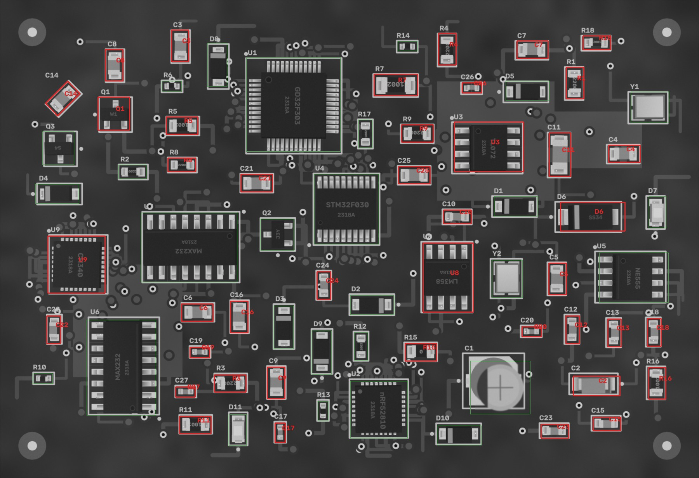
Кроп: живая плата (выровнена) | эталон (жёлтое — метка полярности,
синее — место метки при 180°) | карта отклонений σ.
MISSING — корпус не найден; MISMATCH — на месте не то, что в эталоне (голые площадки, другая деталь,
повреждение); POLARITY — развёрнута на 180° / метка не там; SHIFT / ROTATED — вне допуска;
ANOMALY — локальное отклонение от golden (мост, шарик, лишний припой, посторонний предмет).
| C10 22p · 0603 | FAIL MISMATCH | 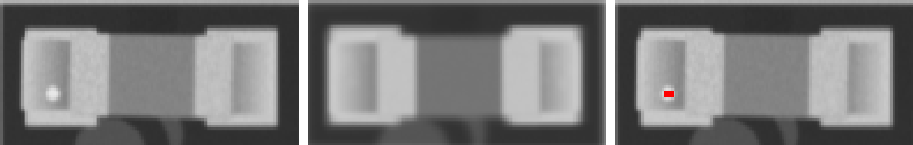 ncc 0.948 · ncc_thr 0.6 · mad 10.4 · mad_thr 8.5 · dx_mm -0.047 · dy_mm -0.023 · dtheta_deg -0.0 · anomaly_px 0 |
| C11 100n · 1206 | FAIL MISMATCH | 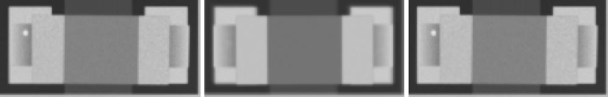 ncc 0.971 · ncc_thr 0.6 · mad 10.6 · mad_thr 7.6 · dx_mm 0.023 · dy_mm 0.0 · dtheta_deg -0.0 · anomaly_px 0 |
| C12 10n · 0603 | FAIL MISMATCH | 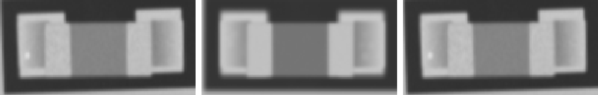 ncc 0.971 · ncc_thr 0.6 · mad 10.1 · mad_thr 8.1 · dx_mm 0.0 · dy_mm 0.0 · dtheta_deg -2 · anomaly_px 0 |
| C13 22p · 0603 | FAIL MISMATCH | 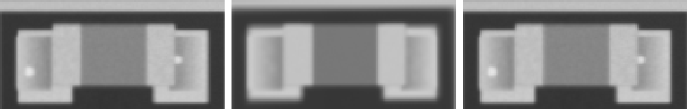 ncc 0.968 · ncc_thr 0.6 · mad 9.3 · mad_thr 7.9 · dx_mm -0.023 · dy_mm -0.047 · dtheta_deg -0.0 · anomaly_px 0 |
| C14 22p · 0805 | FAIL MISMATCH | 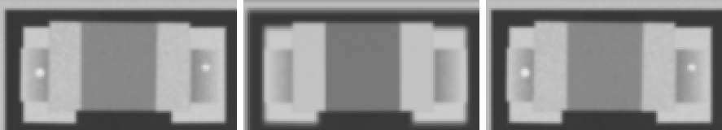 ncc 0.977 · ncc_thr 0.6 · mad 10.5 · mad_thr 7.7 · dx_mm -0.023 · dy_mm 0.0 · dtheta_deg -0.0 · anomaly_px 0 |
| C15 22p · 0603 | FAIL MISMATCH | 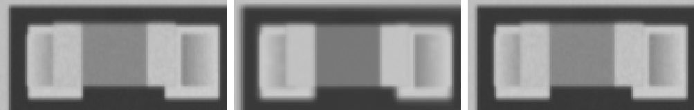 ncc 0.977 · ncc_thr 0.6 · mad 10.1 · mad_thr 7.8 · dx_mm -0.023 · dy_mm 0.0 · dtheta_deg -0.0 · anomaly_px 0 |
| C16 10n · 0805 | FAIL MISMATCH | 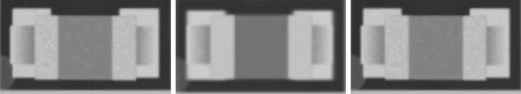 ncc 0.959 · ncc_thr 0.6 · mad 10.9 · mad_thr 7.9 · dx_mm -0.023 · dy_mm 0.047 · dtheta_deg -0.0 · anomaly_px 0 |
| C17 4u7 · 0402 | FAIL MISMATCH | 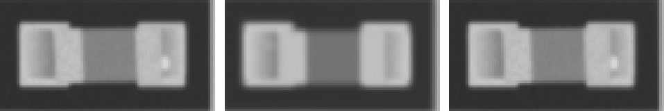 ncc 0.961 · ncc_thr 0.6 · mad 10.9 · mad_thr 9.3 · dx_mm 0.0 · dy_mm 0.0 · dtheta_deg -0.0 · anomaly_px 0 |
| C18 10u · 0603 | FAIL MISMATCH | 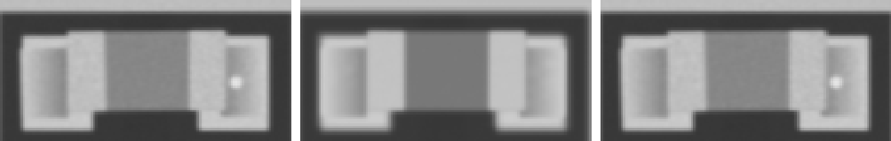 ncc 0.974 · ncc_thr 0.6 · mad 10.0 · mad_thr 7.8 · dx_mm -0.023 · dy_mm 0.0 · dtheta_deg -0.0 · anomaly_px 0 |
| C19 100n · 0402 | FAIL MISMATCH | 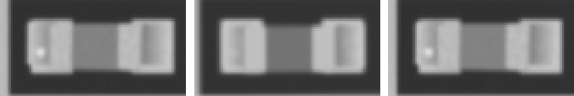 ncc 0.959 · ncc_thr 0.6 · mad 9.9 · mad_thr 8.6 · dx_mm -0.047 · dy_mm 0.0 · dtheta_deg -0.0 · anomaly_px 0 |
| C2 Tantalum_Case-A · Tantalum_Case-A | FAIL MISMATCH | 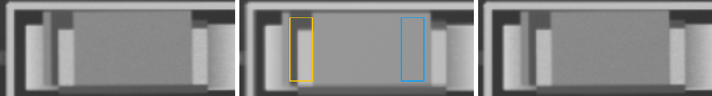 ncc 0.961 · ncc_thr 0.6 · ncc_180 0.51 · mad 12.0 · mad_thr 7.5 · mad_180 28.3 · dx_mm 0.023 · dy_mm 0.0 · dtheta_deg -0.0 · anomaly_px 0 |
| C20 1u · 0402 | FAIL MISMATCH | 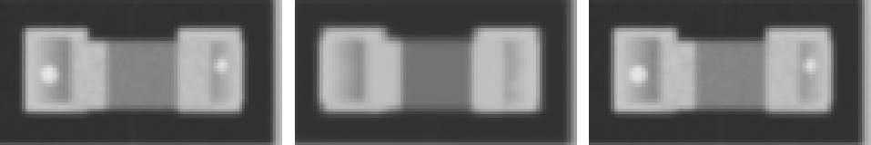 ncc 0.973 · ncc_thr 0.6 · mad 9.9 · mad_thr 9.6 · dx_mm 0.023 · dy_mm 0.0 · dtheta_deg -0.0 · anomaly_px 0 |
| C21 10u · 0805 | FAIL MISMATCH | 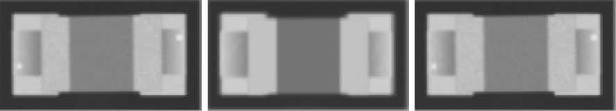 ncc 0.956 · ncc_thr 0.6 · mad 10.5 · mad_thr 7.9 · dx_mm 0.0 · dy_mm 0.0 · dtheta_deg -0.0 · anomaly_px 0 |
| C22 10u · 0603 | FAIL MISMATCH | 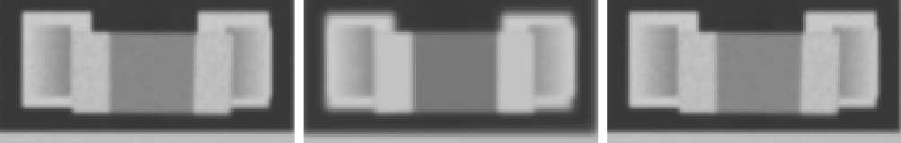 ncc 0.975 · ncc_thr 0.6 · mad 9.8 · mad_thr 8.0 · dx_mm 0.0 · dy_mm 0.023 · dtheta_deg -0.0 · anomaly_px 0 |
| C23 10n · 0603 | FAIL MISMATCH | 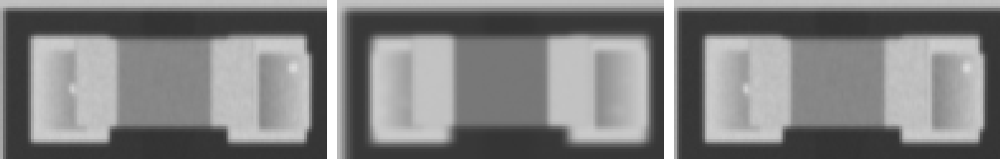 ncc 0.974 · ncc_thr 0.6 · mad 9.7 · mad_thr 7.8 · dx_mm 0.047 · dy_mm 0.0 · dtheta_deg -0.0 · anomaly_px 0 |
| C24 22p · 0603 | FAIL MISMATCH | 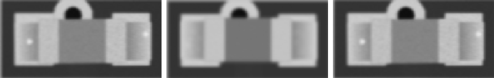 ncc 0.948 · ncc_thr 0.6 · mad 10.5 · mad_thr 8.6 · dx_mm 0.0 · dy_mm 0.023 · dtheta_deg -0.0 · anomaly_px 0 |
| C25 1u · 0805 | FAIL MISMATCH | 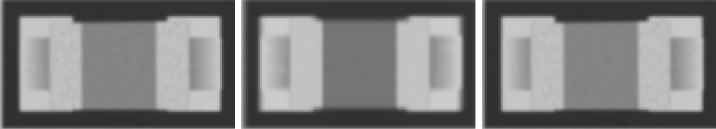 ncc 0.971 · ncc_thr 0.6 · mad 10.2 · mad_thr 7.7 · dx_mm 0.0 · dy_mm 0.0 · dtheta_deg -0.0 · anomaly_px 0 |
| C26 1u · 0402 | FAIL MISMATCH | 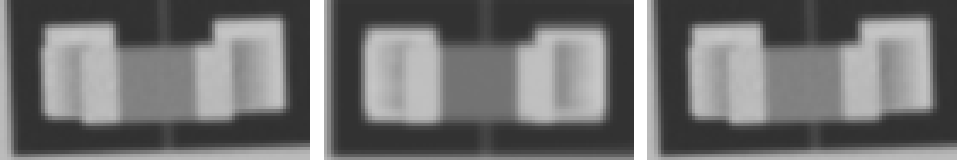 ncc 0.947 · ncc_thr 0.6 · mad 9.6 · mad_thr 9.3 · dx_mm -0.023 · dy_mm 0.047 · dtheta_deg -2 · anomaly_px 0 |
| C27 1u · 0402 | FAIL MISMATCH | 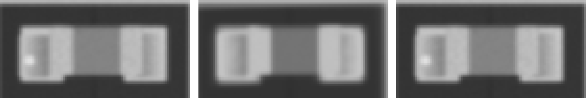 ncc 0.979 · ncc_thr 0.6 · mad 10.0 · mad_thr 9.2 · dx_mm -0.023 · dy_mm 0.0 · dtheta_deg -0.0 · anomaly_px 0 |
| C3 10u · 0805 | FAIL MISMATCH | 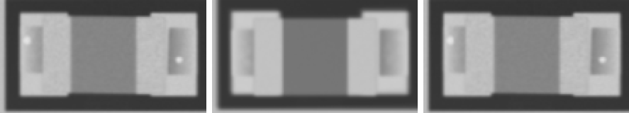 ncc 0.961 · ncc_thr 0.6 · mad 10.5 · mad_thr 7.7 · dx_mm 0.0 · dy_mm -0.023 · dtheta_deg -0.0 · anomaly_px 0 |
| C4 4u7 · 0805 | FAIL MISMATCH | 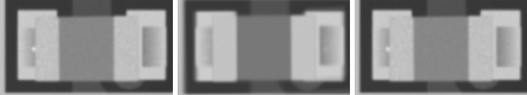 ncc 0.967 · ncc_thr 0.6 · mad 9.8 · mad_thr 7.6 · dx_mm 0.023 · dy_mm 0.023 · dtheta_deg -0.0 · anomaly_px 0 |
| C5 10u · 0805 | FAIL MISMATCH | 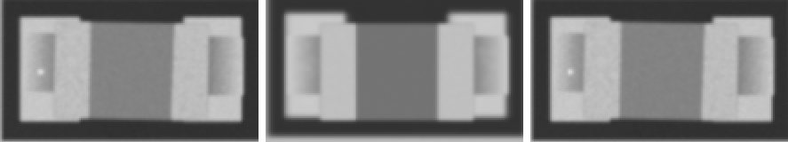 ncc 0.959 · ncc_thr 0.6 · mad 10.4 · mad_thr 7.7 · dx_mm 0.0 · dy_mm -0.047 · dtheta_deg -0.0 · anomaly_px 0 |
| C6 10n · 0805 | FAIL MISMATCH | 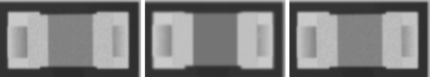 ncc 0.971 · ncc_thr 0.6 · mad 10.1 · mad_thr 7.6 · dx_mm 0.0 · dy_mm 0.0 · dtheta_deg -0.0 · anomaly_px 0 |
| C7 100n · 0805 | FAIL MISMATCH | 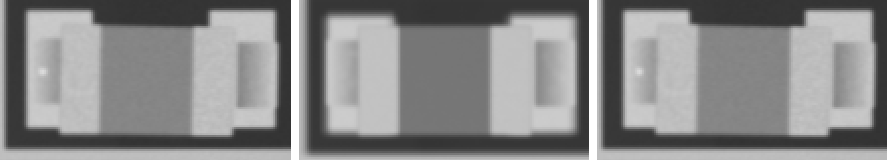 ncc 0.963 · ncc_thr 0.6 · mad 10.4 · mad_thr 7.7 · dx_mm 0.023 · dy_mm 0.07 · dtheta_deg -0.0 · anomaly_px 0 |
| C8 22p · 0805 | FAIL MISMATCH | 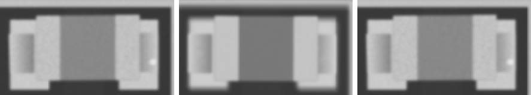 ncc 0.972 · ncc_thr 0.6 · mad 10.4 · mad_thr 7.7 · dx_mm 0.0 · dy_mm -0.023 · dtheta_deg -0.0 · anomaly_px 0 |
| C9 10u · 0805 | FAIL MISMATCH | 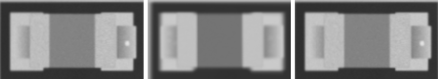 ncc 0.972 · ncc_thr 0.6 · mad 10.3 · mad_thr 7.7 · dx_mm 0.07 · dy_mm 0.0 · dtheta_deg -0.0 · anomaly_px 0 |
| D6 SMA · SMA | FAIL ANOMALY | 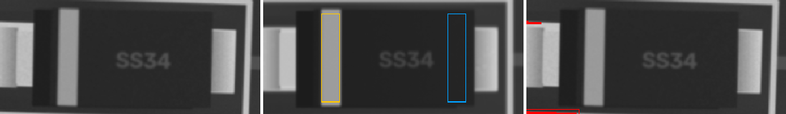 ncc 0.99 · ncc_thr 0.6 · ncc_180 0.752 · mad 5.8 · mad_thr 7.2 · mad_180 11.5 · mark_ncc 0.906 · mark_ncc_180 -0.075 · dx_mm -0.023 · dy_mm 0.023 · dtheta_deg 2 · anomaly_px 155 |
| Q1 W1 · SOT-23 | FAIL MISMATCH | 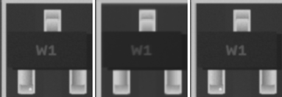 ncc 0.992 · ncc_thr 0.6 · ncc_180 0.596 · mad 7.5 · mad_thr 7.4 · mad_180 8.7 · dx_mm 0.0 · dy_mm 0.0 · dtheta_deg -0.0 · anomaly_px 0 |
| R1 220 · 0805 | FAIL MISMATCH | 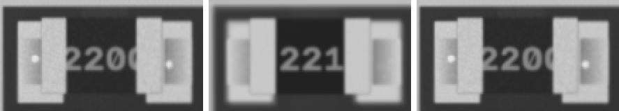 ncc 0.95 · ncc_thr 0.6 · mad 16.2 · mad_thr 10.9 · dx_mm 0.023 · dy_mm 0.0 · dtheta_deg -0.0 · anomaly_px 0 |
| R11 1k · 0805 | FAIL MISMATCH | 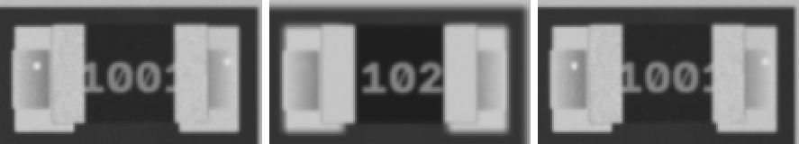 ncc 0.956 · ncc_thr 0.6 · mad 16.1 · mad_thr 12.4 · dx_mm 0.0 · dy_mm 0.0 · dtheta_deg -0.0 · anomaly_px 0 |
| R15 0R · 0805 | FAIL MISMATCH | 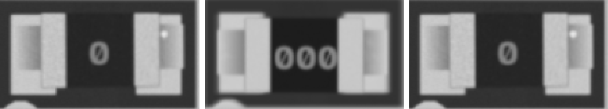 ncc 0.934 · ncc_thr 0.6 · mad 17.3 · mad_thr 9.6 · dx_mm 0.047 · dy_mm -0.023 · dtheta_deg -0.0 · anomaly_px 0 |
| R16 10k · 0805 | FAIL MISMATCH | 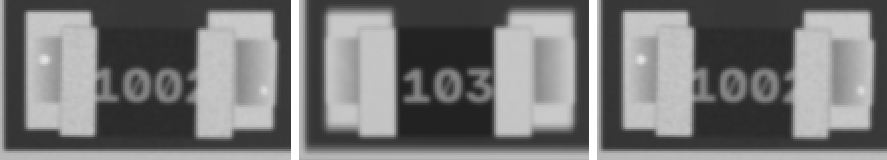 ncc 0.954 · ncc_thr 0.6 · mad 15.5 · mad_thr 9.8 · dx_mm 0.023 · dy_mm 0.0 · dtheta_deg -0.0 · anomaly_px 0 |
| R18 10k · 0603 | FAIL MISMATCH | 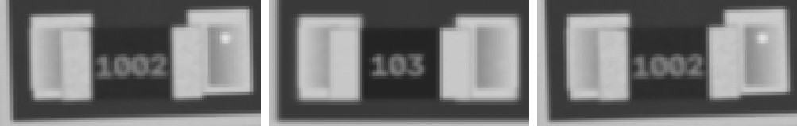 ncc 0.975 · ncc_thr 0.6 · mad 12.5 · mad_thr 9.7 · dx_mm -0.023 · dy_mm 0.047 · dtheta_deg -2 · anomaly_px 0 |
| R3 220 · 0805 | FAIL MISMATCH | 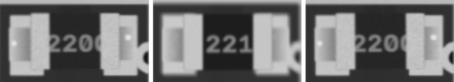 ncc 0.951 · ncc_thr 0.6 · mad 16.5 · mad_thr 12.6 · dx_mm -0.023 · dy_mm -0.023 · dtheta_deg -0.0 · anomaly_px 0 |
| R4 220 · 0805 | FAIL MISMATCH | 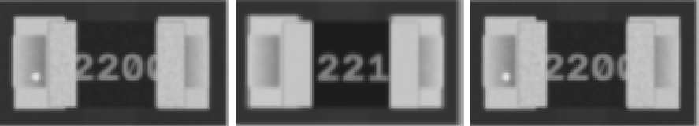 ncc 0.95 · ncc_thr 0.6 · mad 16.6 · mad_thr 12.0 · dx_mm -0.023 · dy_mm -0.023 · dtheta_deg -0.0 · anomaly_px 0 |
| R5 10k · 0805 | FAIL MISMATCH | 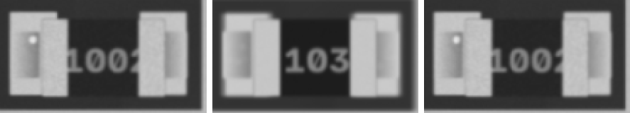 ncc 0.955 · ncc_thr 0.6 · mad 15.6 · mad_thr 11.5 · dx_mm 0.023 · dy_mm 0.023 · dtheta_deg -0.0 · anomaly_px 0 |
| R7 10k · 1206 | FAIL MISMATCH | 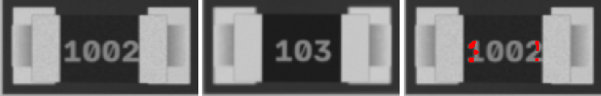 ncc 0.95 · ncc_thr 0.6 · mad 17.2 · mad_thr 8.9 · dx_mm -0.023 · dy_mm 0.0 · dtheta_deg -0.0 · anomaly_px 0 |
| R8 220 · 0603 | FAIL MISMATCH | 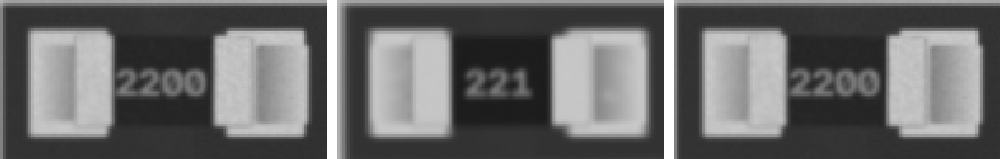 ncc 0.97 · ncc_thr 0.6 · mad 14.5 · mad_thr 11.9 · dx_mm 0.047 · dy_mm 0.0 · dtheta_deg -0.0 · anomaly_px 0 |
| R9 220 · 0805 | FAIL MISMATCH | 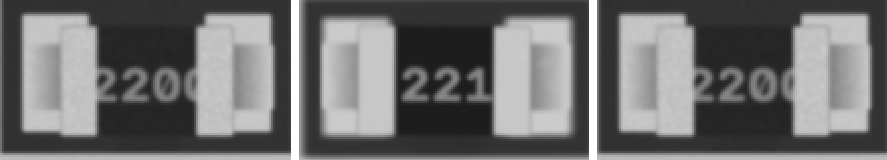 ncc 0.947 · ncc_thr 0.6 · mad 17.3 · mad_thr 12.3 · dx_mm 0.023 · dy_mm 0.047 · dtheta_deg -0.0 · anomaly_px 0 |
| U3 TL072 · SOIC-8 | FAIL MISMATCH | 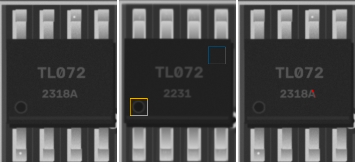 ncc 0.85 · ncc_thr 0.6 · ncc_180 0.734 · mad 7.5 · mad_thr 7.2 · mad_180 8.6 · dx_mm 0.047 · dy_mm -0.047 · dtheta_deg -0.0 · anomaly_px 0 |
| U8 LM358 · SOIC-8 | FAIL MISMATCH | 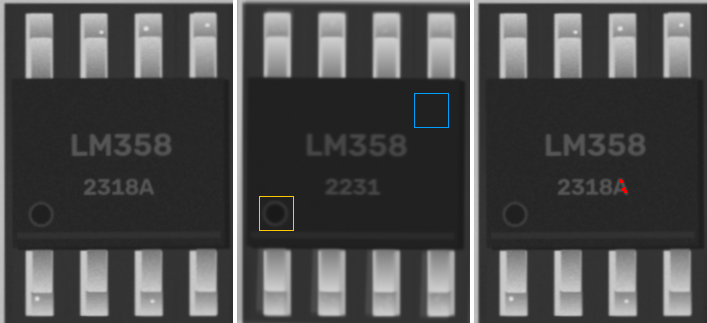 ncc 0.889 · ncc_thr 0.6 · ncc_180 0.777 · mad 7.3 · mad_thr 7.3 · mad_180 8.7 · dx_mm 0.023 · dy_mm -0.023 · dtheta_deg -0.0 · anomaly_px 0 |
| U9 CH340 · QFN-32 | FAIL MISMATCH | 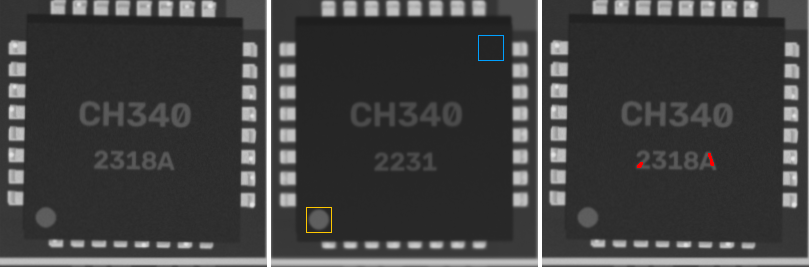 ncc 0.916 · ncc_thr 0.6 · ncc_180 0.654 · mad 7.6 · mad_thr 7.2 · mad_180 10.0 · dx_mm 0.023 · dy_mm 0.023 · dtheta_deg -0.0 · anomaly_px 0 |
| C1 220u · CP_Elec_5x5.8 | PASS | ncc 0.999 · ncc_thr 0.6 · ncc_180 0.543 · mad 1.4 · mad_thr 8.8 · mad_180 26.4 · mark_ncc 0.999 · mark_ncc_180 -0.756 · dx_mm 0.0 · dy_mm 0.0 · dtheta_deg -0.0 · anomaly_px 0 |
| D1 SOD-123 · SOD-123 | PASS | ncc 0.995 · ncc_thr 0.6 · ncc_180 0.818 · mad 5.6 · mad_thr 7.2 · mad_180 14.7 · mark_ncc 0.937 · mark_ncc_180 -0.055 · dx_mm 0.0 · dy_mm -0.023 · dtheta_deg -0.0 · anomaly_px 0 |
| D10 SOD-123 · SOD-123 | PASS | ncc 0.993 · ncc_thr 0.6 · ncc_180 0.746 · mad 5.6 · mad_thr 7.2 · mad_180 16.3 · mark_ncc 0.948 · mark_ncc_180 0.064 · dx_mm -0.023 · dy_mm 0.0 · dtheta_deg -0.0 · anomaly_px 0 |
| D11 LED_0805 · LED_0805 | PASS | ncc 0.981 · ncc_thr 0.6 · ncc_180 0.897 · mad 5.0 · mad_thr 7.7 · mad_180 5.4 · mark_ncc 0.007 · mark_ncc_180 0.009 · dx_mm -0.093 · dy_mm 0.023 · dtheta_deg -0.0 · anomaly_px 0 |
| D2 SOD-123 · SOD-123 | PASS | ncc 0.994 · ncc_thr 0.6 · ncc_180 0.838 · mad 5.6 · mad_thr 7.1 · mad_180 13.8 · mark_ncc 0.979 · mark_ncc_180 0.01 · dx_mm 0.0 · dy_mm -0.023 · dtheta_deg -0.0 · anomaly_px 0 |
| D3 SOD-123 · SOD-123 | PASS | ncc 0.987 · ncc_thr 0.6 · ncc_180 0.753 · mad 6.3 · mad_thr 7.3 · mad_180 14.2 · mark_ncc 0.934 · mark_ncc_180 -0.02 · dx_mm 0.0 · dy_mm -0.023 · dtheta_deg -0.0 · anomaly_px 0 |
| D4 SOD-123 · SOD-123 | PASS | ncc 0.996 · ncc_thr 0.6 · ncc_180 0.841 · mad 5.7 · mad_thr 7.2 · mad_180 13.7 · mark_ncc 0.944 · mark_ncc_180 0.014 · dx_mm -0.023 · dy_mm 0.023 · dtheta_deg -0.0 · anomaly_px 0 |
| D5 SOD-123 · SOD-123 | PASS | ncc 0.99 · ncc_thr 0.6 · ncc_180 0.827 · mad 5.4 · mad_thr 7.2 · mad_180 14.0 · mark_ncc 0.97 · mark_ncc_180 0.027 · dx_mm 0.0 · dy_mm 0.047 · dtheta_deg -0.0 · anomaly_px 0 |
| D7 LED_0805 · LED_0805 | PASS | ncc 0.979 · ncc_thr 0.6 · ncc_180 0.759 · mad 4.8 · mad_thr 7.5 · mad_180 5.0 · mark_ncc -0.029 · mark_ncc_180 0.007 · dx_mm -0.07 · dy_mm 0.0 · dtheta_deg -0.0 · anomaly_px 0 |
| D8 SOD-123 · SOD-123 | PASS | ncc 0.988 · ncc_thr 0.6 · ncc_180 0.868 · mad 6.0 · mad_thr 7.2 · mad_180 13.1 · mark_ncc 0.951 · mark_ncc_180 0.136 · dx_mm -0.023 · dy_mm -0.07 · dtheta_deg -0.0 · anomaly_px 0 |
| D9 SOD-123 · SOD-123 | PASS | ncc 0.994 · ncc_thr 0.6 · ncc_180 0.838 · mad 5.5 · mad_thr 7.2 · mad_180 13.7 · mark_ncc 0.98 · mark_ncc_180 0.016 · dx_mm 0.023 · dy_mm -0.047 · dtheta_deg -0.0 · anomaly_px 0 |
| Q2 J3Y · SOT-23 | PASS | ncc 0.966 · ncc_thr 0.6 · ncc_180 0.616 · mad 6.4 · mad_thr 7.3 · mad_180 30.5 · dx_mm 0.023 · dy_mm 0.047 · dtheta_deg -0.0 · anomaly_px 0 |
| Q3 S4 · SOT-23 | PASS | ncc 0.982 · ncc_thr 0.6 · ncc_180 0.663 · mad 6.6 · mad_thr 7.2 · mad_180 8.4 · dx_mm 0.023 · dy_mm -0.023 · dtheta_deg -0.0 · anomaly_px 0 |
| R10 4k7 · 0402 | PASS | ncc 0.985 · ncc_thr 0.6 · mad 7.8 · mad_thr 9.8 · dx_mm -0.023 · dy_mm 0.023 · dtheta_deg -2 · anomaly_px 0 |
| R12 100k · 0603 | PASS | ncc 0.972 · ncc_thr 0.6 · mad 13.9 · mad_thr 14.4 · dx_mm -0.023 · dy_mm 0.0 · dtheta_deg -0.0 · anomaly_px 0 |
| R13 220 · 0402 | PASS | ncc 0.993 · ncc_thr 0.6 · mad 6.9 · mad_thr 9.8 · dx_mm 0.023 · dy_mm 0.0 · dtheta_deg -0.0 · anomaly_px 0 |
| R14 4k7 · 0402 | PASS | ncc 0.993 · ncc_thr 0.6 · mad 6.1 · mad_thr 9.4 · dx_mm -0.023 · dy_mm 0.0 · dtheta_deg -0.0 · anomaly_px 0 |
| R17 10k · 0603 | PASS | ncc 0.976 · ncc_thr 0.6 · mad 13.7 · mad_thr 15.3 · dx_mm -0.023 · dy_mm 0.0 · dtheta_deg -0.0 · anomaly_px 0 |
| R2 220 · 0603 | PASS | ncc 0.968 · ncc_thr 0.6 · mad 13.9 · mad_thr 14.7 · dx_mm 0.047 · dy_mm 0.0 · dtheta_deg -0.0 · anomaly_px 0 |
| R6 220 · 0402 | PASS | ncc 0.966 · ncc_thr 0.6 · mad 8.4 · mad_thr 11.6 · dx_mm 0.023 · dy_mm 0.047 · dtheta_deg 2 · anomaly_px 0 |
| U1 GD32F303 · LQFP-48 | PASS | ncc 0.923 · ncc_thr 0.6 · ncc_180 0.729 · mad 5.8 · mad_thr 7.1 · mad_180 7.5 · mark_ncc 0.912 · mark_ncc_180 0.017 · dx_mm 0.023 · dy_mm 0.0 · dtheta_deg -0.0 · anomaly_px 0 |
| U2 nRF52810 · QFN-32 | PASS | ncc 0.933 · ncc_thr 0.6 · ncc_180 0.758 · mad 7.2 · mad_thr 7.3 · mad_180 10.6 · mark_ncc 0.981 · mark_ncc_180 -0.118 · dx_mm 0.0 · dy_mm 0.047 · dtheta_deg -0.0 · anomaly_px 0 |
| U4 STM32F030 · TSSOP-20 | PASS | ncc 0.928 · ncc_thr 0.6 · ncc_180 0.752 · mad 7.1 · mad_thr 7.6 · mad_180 9.9 · mark_ncc 0.803 · mark_ncc_180 -0.067 · dx_mm 0.0 · dy_mm -0.023 · dtheta_deg -0.0 · anomaly_px 0 |
| U5 NE555 · SOIC-8 | PASS | ncc 0.946 · ncc_thr 0.6 · ncc_180 0.754 · mad 6.0 · mad_thr 7.5 · mad_180 8.1 · mark_ncc 0.918 · mark_ncc_180 -0.115 · dx_mm 0.023 · dy_mm -0.07 · dtheta_deg -0.0 · anomaly_px 0 |
| U6 MAX232 · SOIC-16 | PASS | ncc 0.972 · ncc_thr 0.6 · ncc_180 0.842 · mad 6.7 · mad_thr 7.3 · mad_180 7.4 · mark_ncc 0.894 · mark_ncc_180 0.018 · dx_mm -0.023 · dy_mm 0.023 · dtheta_deg -0.0 · anomaly_px 0 |
| U7 MAX232 · SOIC-16 | PASS | ncc 0.946 · ncc_thr 0.6 · ncc_180 0.873 · mad 6.7 · mad_thr 7.2 · mad_180 7.9 · mark_ncc 0.739 · mark_ncc_180 0.079 · dx_mm 0.0 · dy_mm -0.023 · dtheta_deg -0.0 · anomaly_px 0 |
| Y1 Crystal_SMD_3225 · Crystal_SMD_3225 | PASS | ncc 0.989 · ncc_thr 0.6 · mad 2.6 · mad_thr 7.9 · dx_mm 0.0 · dy_mm -0.023 · dtheta_deg -0.0 · anomaly_px 0 |
| Y2 Crystal_SMD_3225 · Crystal_SMD_3225 | PASS | ncc 0.994 · ncc_thr 0.6 · mad 3.5 · mad_thr 7.7 · dx_mm 0.047 · dy_mm 0.023 · dtheta_deg -0.0 · anomaly_px 0 |